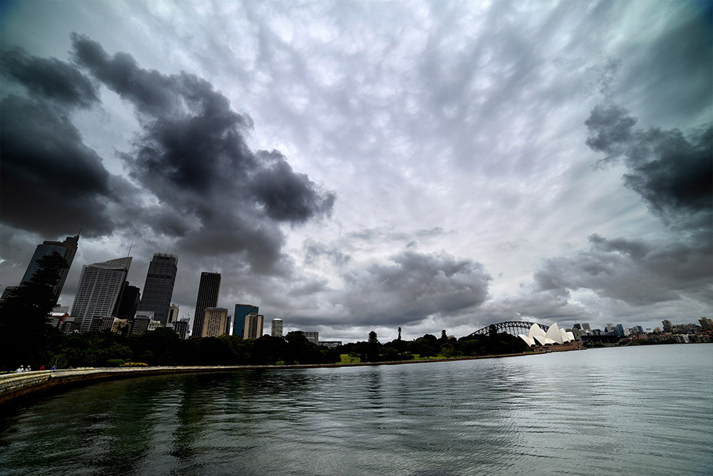
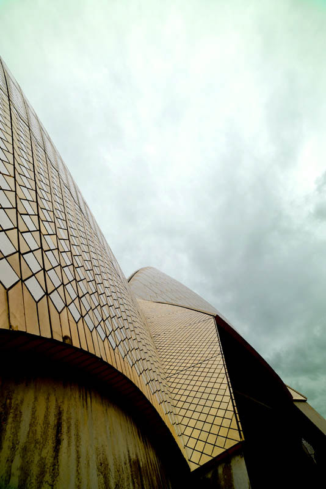
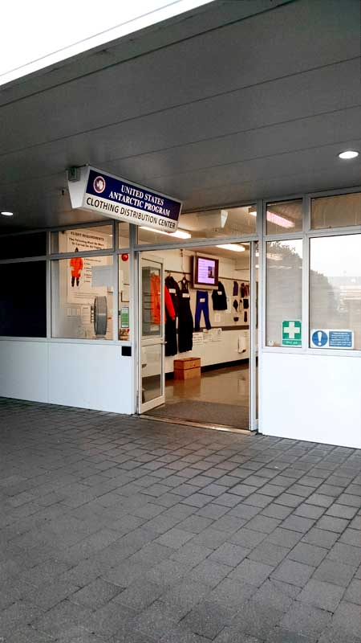

Captain's Web Log(3) - 8 Jan 2016 - But seriously, how do you get to the South Pole?
Step 0)
Fly commercial to Christchurch, NZ - In my case, I left from CVG (the Cincinnati/Northern Kentucky airport) to DFW (Dallas/Fort Worth) on Friday, Jan 1 (having driven down to Cincy from Madison a couple of days earlier).
That was a 3-hour flight, and then I had a 4-hour layover in Dallas. Next up, the longest commercial flight then available (though it was overtaken in February by a new route
from Singapore airlines), 17 hours from Dallas to Sydney, where I arrived at 6 am on Jan 3 (nearly a day for
the flight itself, plus we crossed the international dateline). I had a 13-hour layover in Sydney, but fortunately I had an Australian entry visa, so
I was able to leave the airport and go explore Syndey for a while. I was even able to meet up with a couple of Madison friends who were in town on vacation. Back at the airport,
it's on to New Zealand, another 3-hour flight, arriving in Christchurch just before midnight on Jan 3. For those of you keeping score at home, that's 23 hours on a plane and
40 hours of travel time (and that's only step 0). After clearing security, we caught a shuttle to our hotel near downtown Christchurch.


Step 1)
Clothing Distribution - Next up, at 8:15 on Jan 4, we got back on the shuttle to go back to the airport (or rather, right next to the airport) where the USAP
clothing distribution center (CDC) is located and where we receive our ECW (extreme cold weather gear). Boots, boot liners, fleece pants, a fleece shirt, a heavy jacket, a hood, a light jacket, a parka, insulated Carhartt overalls,
wind breaker overalls, several pairs of gloves and glove liners, two pairs of mittens, a hat, ski goggles, a neck gaiter, and a balaclava later, I was geared up and ready to go.
We re-packed our gear with our new ECW, and headed back into Christchurch for an afternoon of exploring.

Step 2)
Fly to McMurdo - A shuttle picked us up at 5:45 the next morning to go back to the airport once again. We're required to wear part of our ECW on the plane, so we change clothes,
make any final re-packing adjustments, and get in line to check in. At checkin, they do normal air-travel things like check passports, but also unusual things like weigh not only your
bags, but also you wearing all your gear. They need to know the exact weight of the passengers and bags so they know how much fuel they need and how many passengers can fit. At this
point you surrender your checked bags. I had two regular checked bags (one full of the ECW I didn't have to wear on the plane, and one with my personal possessions), plus one "boomerang bag"
which is the only one you get back if your flight gets cancelled after that point, or if your get on the flight but have to turn back part way there (aka "boomerang") because of a change
in weather. The plane has to carry enough fuel to fly all the way there and all the way back, in case the weather changes for the worse very shortly before landing. In our case that
was an especially large amount of fuel because of strong headwinds. They had to carry so much fuel that they were only able to take 2/3 the normal amount of cargo/passenger weight.
Because of this, many people got bumped from their original flights. We were supposed to be on the first flight of the day, but ended up on the second. Many people who were supposed
to be on the second got bumped to the third (which ended up being cancelled all together several hours later, oops).
Then we watch a training/safety video, and wait for our flight. Since we were bumped to the second flight, we had a fair amount of time to kill, so we went to the "tourist" part of the US
Antarctic Center and ate in the cafe there.
Finally it was time to board the (converted school) bus to ride across the street to where the planes are. We're driving towards the plane... we're almost there... we're driving away from the plane.
In the 15 minutes it took to board the plane and drive over to the tarmac, there's been a weather delay. Oops. So we drive back to the terminal and wait another hour. Board the bus again. Drive to the plane again.
The crew standing outside the plane starts shaking their heads and laughing. Apparently we're an hour early. This time we drive to a different passenger terminal slightly closer to the plane, and wait another hour.
Get back on the bus. Drive back to the plane. Get off the bus (progress!!), get on the plane. We taxi to the runway. And wait. And wait. And wait. There a problem with one of the instruments. Luckily, one of the
military guys catching a ride with us happens to be from the avionics department. He goes up to the cockpit, investigates, and we're back to it. And we wait. And wait. Now the VOR needles are 100 degrees off. Random
avionics dude can't fix this one. We taxi back and get the actual on-duty avionics guy. He fixes it, yay! But now we've been sitting around so long running the engines that we don't have enough fuel left. And you can't fuel a plane
with passengers on it (safety rules I guess), so we're back on the bus. Finally, they're done refuelling, we get back on the plane and this time we actually take off. 8 hours later, we're on the ground at McMurdo. At this point it's
just after midnight on Jan 6. By the time we deplane and ride Ivan The Terrabus up the hill to the station, and get our room keys, we're just in time to catch the last couple minutes of 'midrats', the midnight meal served in the dining hall
so that people who work the nigh shift can have 'lunch'. We're scheduled to fly to Pole early the next morning, so we have to stay awake until our 'bag drag' time of 1:30am so that we can be weighed with our luggage and ECW (again) in
preparation for the Pole flight. We eat, bag drag, and finally it's time for some sleep. I'm in a quad in the dorm, but with just one other person; my fellow SPT winterover, Christine. We
Step 3)
Fly to the South Pole! -